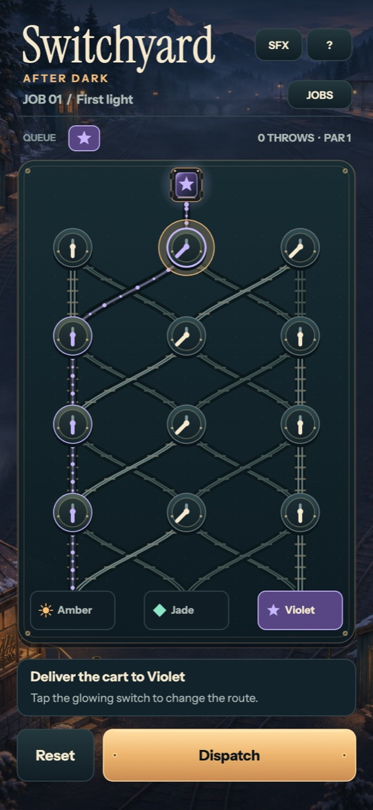
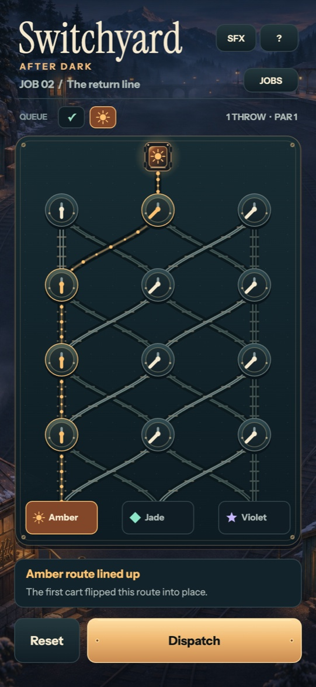
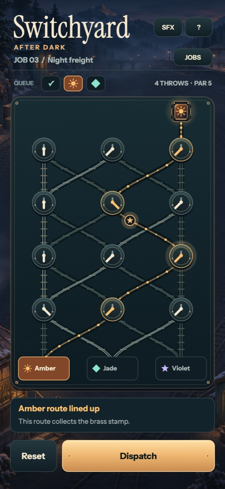

From first light to night freight
This recorded touch playtest follows the first delivery, the route a cart leaves behind, and a later detour to pick up a brass stamp.
Open the gameplay videoThree choices at the controls



Design references
- Descensus 2
A visible deflection changes the path of something already moving. Switchyard turns that idea into a plan you can read before committing.
- LADDER DROP
Simple input changes the route of an autonomous traveler, and a visible reward makes the detour a choice.
- Digger
The board inherits the consequences of the last move. Here, each crossed switch reverses for the following cart.